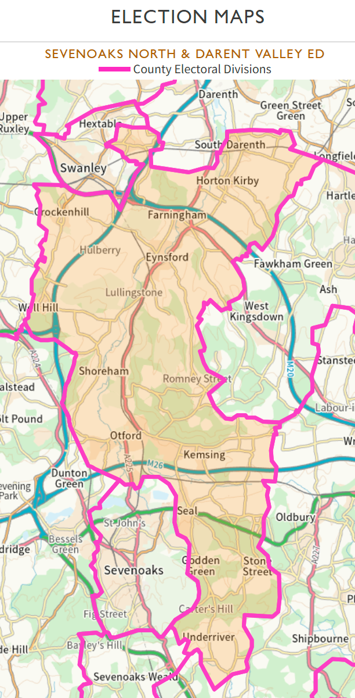

Household Distribution
| Location | Estimated Households | Notes |
|---|---|---|
| Seal (main village) | 1,713 | Main village of Seal civil parish, excluding Styants Bottom. |
| Otford (main village) | 1,379 | Main village of Otford civil parish, excluding Carters Hill and Stone Street. |
| Kemsing (main village) | 1,330 | Main village of Kemsing civil parish, excluding smaller areas. |
| Swanley Village | 833 | Part of Swanley Central ward, estimated based on population of 2,000. |
| Horton Kirby | 792 | Part of Horton Kirby & South Darenth civil parish, split by population. |
| Eynsford (main village) | 639 | Main village of Eynsford civil parish, excluding Lullingstone. |
| South Darenth | 637 | Part of Horton Kirby & South Darenth civil parish, split by population. |
| Crockenhill (main village) | 584 | Main village of Crockenhill civil parish, excluding Well Hill. |
| Farningham (main village) | 537 | Main village of Farningham civil parish, excluding Romney Street. |
| Shoreham | 479 | Entire civil parish, no sub-divisions listed. |